最近部门做安卓移动开发的需要调C++的代码，困难重重，最后任务交给了我，查找相关资料，没有一个教程能把不同环境(windows,linux)下怎么调用说明白的，自己在实现的过程中踩了几个坑，在这里总结下，希望看到的以后能少走弯路。
使用工具：
1.JAVA使用的IDE为eclipse
2.windows环境下C++使用的IDE为visual studio 2010
3.linux环境下C++使用的编译器为gcc/g++1.1新建java工程，生成相应头文件
eclipse新建工程名为"jniDemo"的java工程，在包名为com.woniu.Native下新建"NativeCpp.java"类，如下：
package com.woniu.Native;
public class NativeCpp {
public native void fun1();
public native int fun2(int a, int b);
public native void fun3(String url1, String url2);
}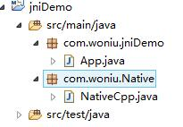
编译生成.class文件
进入工程下的target\classes目录下，执行"javah -jni com.woniu.Native.NativeCpp",运行结果如下：
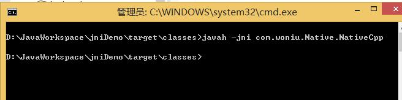
此时，会在classes目录下生成"com_woniu_Native_NativeCpp.h"头文件，头文件内容如下：
/* DO NOT EDIT THIS FILE - it is machine generated */
#include <jni.h>
/* Header for class com_woniu_Native_NativeCpp */
#ifndef _Included_com_woniu_Native_NativeCpp
#define _Included_com_woniu_Native_NativeCpp
#ifdef __cplusplus
extern "C" {
#endif
/*
* Class: com_woniu_Native_NativeCpp
* Method: fun1
* Signature: ()V
*/
JNIEXPORT void JNICALL Java_com_woniu_Native_NativeCpp_fun1
(JNIEnv *, jobject);
/*
* Class: com_woniu_Native_NativeCpp
* Method: fun2
* Signature: (II)I
*/
JNIEXPORT jint JNICALL Java_com_woniu_Native_NativeCpp_fun2
(JNIEnv *, jobject, jint, jint);
/*
* Class: com_woniu_Native_NativeCpp
* Method: fun3
* Signature: (Ljava/lang/String;Ljava/lang/String;)V
*/
JNIEXPORT void JNICALL Java_com_woniu_Native_NativeCpp_fun3
(JNIEnv *, jobject, jstring, jstring);
#ifdef __cplusplus
}
#endif
#endif1.2 c++生成动态库
vs2010新建工程名为"JniDll"的win32控制台应用程序，win32应用程序向导界面选择 "DLL"
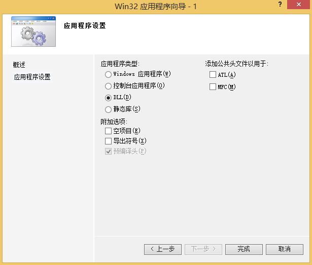
创建完成后，把2.1中生成的"com_woniu_Native_NativeCpp.h"头文件放入该工程，并把头文件中的#include <jni.h>改为 "jni.h"，
把JDK下include文件夹下的"jni.h"和include下win32文件夹下的"jni_md.h"头文件也一同放入创建的工程中。
工程目录如下：
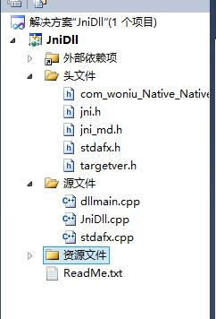
编辑JniDll.cpp源码文件，实现头文件中的函数，如下：
/********************************************************
Copyright (C), 2016-2017,
FileName: jni
Author: woniu201
Email: wangpengfei.201@163.com
Created: 2017/09/20
Description:Jni function
********************************************************/
#include "stdafx.h"
#include "com_woniu_Native_NativeCpp.h"
#include "stdio.h"
#include "stdlib.h"
JNIEXPORT void JNICALL Java_com_woniu_Native_NativeCpp_fun1
(JNIEnv *, jobject)
{
printf("hello world\n");
}
JNIEXPORT jint JNICALL Java_com_woniu_Native_NativeCpp_fun2
(JNIEnv *, jobject, jint a, jint b)
{
return a + b;
}
char* jstringToChar(JNIEnv* env, jstring jstr) {
char* rtn = NULL;
jclass clsstring = env->FindClass("java/lang/String");
jstring strencode = env->NewStringUTF("GB2312");
jmethodID mid = env->GetMethodID(clsstring, "getBytes", "(Ljava/lang/String;)[B");
jbyteArray barr = (jbyteArray) env->CallObjectMethod(jstr, mid, strencode);
jsize alen = env->GetArrayLength(barr);
jbyte* ba = env->GetByteArrayElements(barr, JNI_FALSE);
if (alen > 0) {
rtn = (char*) malloc(alen + 1);
memcpy(rtn, ba, alen);
rtn[alen] = 0;
}
env->ReleaseByteArrayElements(barr, ba, 0);
return rtn;
}
JNIEXPORT void JNICALL Java_com_woniu_Native_NativeCpp_fun3
(JNIEnv *env, jobject, jstring url1, jstring url2)
{
//jstringתchar*
char* pUrl1 = jstringToChar(env, url1);
char* pUrl2 = jstringToChar(env, url2);
printf("url1 = %s\n", pUrl1);
printf("url2 = %s\n", pUrl2);
}我本机是64位系统，使用的是64位JDK，这里生成的动态库也要生成64位的库，否则调用的时候报如下错误：
更改vs编译生成64位dll，步骤如下：
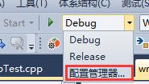
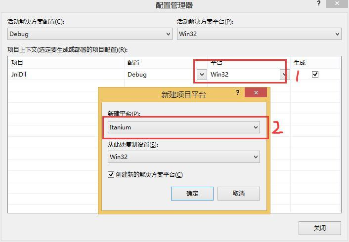
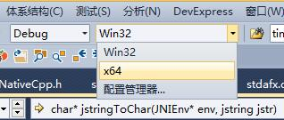
编译生成解决方案，这时候会在工程根目录下，生成"x64文件夹"，Debug文件夹下会有动态库"JniDll.dll"
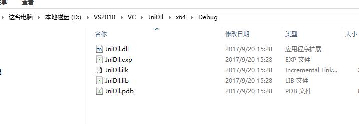
1.3 java调用dll
package com.woniu.jniDemo;
import com.woniu.Native.NativeCpp;
public class App
{
public static void main( String[] args )
{
System.load("D:\\VS2010\\VC\\JniDll\\x64\\Debug\\JniDll.dll");
NativeCpp nativeCpp = new NativeCpp();
nativeCpp.fun1();
System.out.println(nativeCpp.fun2(3, 3));
nativeCpp.fun3("www.baidu.com", "www.haoservice.cn");
}
}运行结果如下：
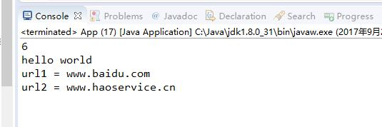
2.1 编译环境
a.安装gcc和g++
yum install gcc-c++
b.安装jdk
去官网上下载jdk安装包，建议使用rpm安装包，会自动配置环境变量。安装完后如下：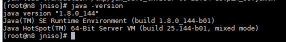
本机的安装目录为：/usr/java/jdk1.8.0_144/，不同版本可能不同。
这里一定要注意不能安装openjdk,因为openjdk没有include目录，编译时需要用到include目录的头文件。
2.2 制作动态库(so库)
a.创建文件夹"jniso",mkdir jniso。
b.把2.1中生成的头文件"com_woniu_Native_NativeCpp.h"拷贝过来,#include "jni.h"改为#include <jni.h>
c.新建jni.cpp源文件，添加如下代码：#include <jni.h>
#include "com_woniu_Native_NativeCpp.h"
#include "stdio.h"
#include "stdlib.h"
#include "string.h"
JNIEXPORT void JNICALL Java_com_woniu_Native_NativeCpp_fun1 (JNIEnv *, jobject)
{
printf("hello world\n");
}
JNIEXPORT jint JNICALL Java_com_woniu_Native_NativeCpp_fun2
(JNIEnv *, jobject, jint a, jint b)
{
return a + b;
}
char* jstringToChar(JNIEnv* env, jstring jstr) {
char* rtn = NULL;
jclass clsstring = env->FindClass("java/lang/String");
jstring strencode = env->NewStringUTF("GB2312");
jmethodID mid = env->GetMethodID(clsstring, "getBytes", "(Ljava/lang/String;)[B");
jbyteArray barr = (jbyteArray) env->CallObjectMethod(jstr, mid, strencode);
jsize alen = env->GetArrayLength(barr);
jbyte* ba = env->GetByteArrayElements(barr, JNI_FALSE);
if (alen > 0) {
rtn = (char*) malloc(alen + 1);
memcpy(rtn, ba, alen);
rtn[alen] = 0;
}
env->ReleaseByteArrayElements(barr, ba, 0);
return rtn;
}
JNIEXPORT void JNICALL Java_com_woniu_Native_NativeCpp_fun3
(JNIEnv *env, jobject, jstring url1, jstring url2)
{
char* pUrl1 = jstringToChar(env, url1);
char* pUrl2 = jstringToChar(env, url2);
printf("url1 = %s\n", pUrl1);
printf("url2 = %s\n", pUrl2);
}d.编译，生成动态库
g++ -fPIC -c jni.cpp -I /usr/java/jdk1.8.0_144/include/ -I /usr/java/jdk1.8.0_144/include/linux/
g++ -shared jni.o -o jni.so
2.3 java调用jni.so
import com.woniu.Native.NativeCpp;
public class App
{
public static void main( String[] args )
{
//windows环境下加载库
//System.load("D:\\VS2010\\VC\\JniDll\\x64\\Debug\\JniDll.dll");
//linux下加载库
System.load("/mnt/hgfs/svn/svn/Demo/jniso/jni.so");
NativeCpp nativeCpp = new NativeCpp();
nativeCpp.fun1();
System.out.println(nativeCpp.fun2(3, 3));
nativeCpp.fun3("www.baidu.com", "www.haoservice.cn");
}
}运行结果如下：
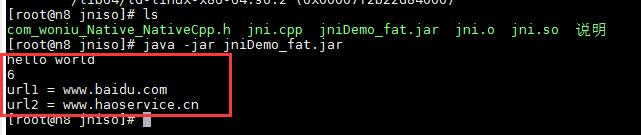
关注下面公众号，回复"105"获取windows下生成dll源码
关注下面公众号，回复"106"获取linux下生成so源码
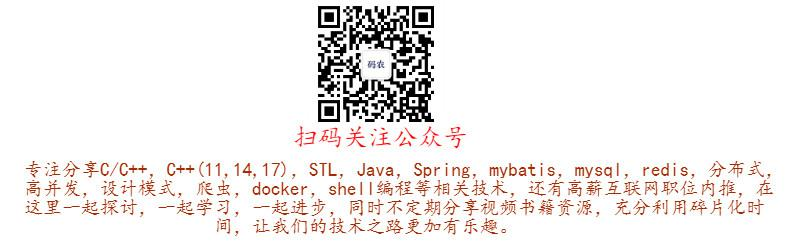